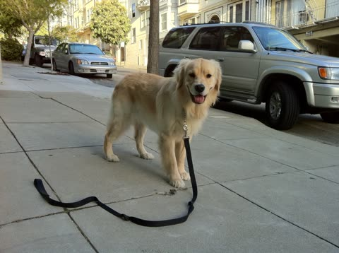

Test 05 · 人与狗：双参考图 vs 首帧加文字
一位女性牵着一只金毛在海边散步。参考组把女性和金毛两张图都作为主体参考；对照组只把女性图作为首帧，金毛用文字描述。
测什么、怎么测
H3 Max，6 秒、768P，两组用成对种子。女性图是先前一条生成视频里截的虚构人物，金毛是 Wikimedia Commons 的 CC0 照片。

Prompt 原文
Create a photorealistic cinematic video featuring the woman from Image 1 and the golden retriever from Image 2. The woman is walking along a seaside promenade at sunset, holding a leash while the golden retriever walks happily beside her. Preserve the woman's facial identity, hairstyle, clothing appearance, and the dog's breed, fur color, and physical characteristics from the reference images. The dog occasionally looks up at the woman and wags its tail. The woman smiles naturally and gently looks down at the dog. The camera follows them from a side angle, then slowly moves to a front-facing tracking shot. Natural human and animal movement, consistent character identity, realistic fur physics, warm cinematic sunset lighting. Do not change the identity or appearance of either subject.
汇总
| 条件 | 完成 | 实际规格 | 实测时长（秒） | 端到端（秒） | 单条估算（USD） |
|---|---|---|---|---|---|
| H3 Max · 双参考图 | 3／3 | 1344x768 @ 24 | 6.592 | 72–72 | 0.53 |
| H3 Max · 女性首帧 + 文字指定金毛 | 3／3 | 1344x768 @ 24 | 6.592 | 71–71 | 0.53 |
结论与建议
- 双参考组一开始就在海边、两个主体同框。三条从第一个抽样点（0.625 秒）起就是日落步道上的女性加金毛；金毛的浅金毛色更接近参考照片。
- 首帧组先“演”一段原图。三条开头都还是输入图里的实验室背景，约 4.25 秒才换到海边并让狗出现，金毛也偏橙色——它只能按文字想象一只金毛。
- 身份是否严格保留，抽帧判断不了。两组都保住了黑发和深蓝衣服，但很多帧里人脸被裁出画面或太小，狗的个体特征也无法逐帧确认。
- 建议：多主体要同时出现、外观要接近参考时，用 Reference-to-Video；只需要从一张定稿图开始动起来，才用图生视频。两者的差别是输入角色不同，不是画质高低。
未确认 / 不能下结论
- 人脸和犬只的个体一致性需要更近景的样片和人工比对。
全部样片
第 1 对 · 双参考 vs 首帧
t05-woman-dog-ref-r1
实际1344x768 · 24 fps · 6.592 秒 · 有音轨
耗时接收→完成 27.7 秒 · 端到端 71.7 秒
估算$0.527（发布单价 × 实测秒数）
请求resolution=768P · duration=6 · aspect_ratio=16:9 · reference_images=['woman-generated.jpg', 'golden-retriever.jpg'] · seed=28111
评分4/5/5/4 A/V/T/M，抽帧探索性
首个0.625s样本已见日落海边步道、女性和金毛牵绳同行；2.25s狗抬头。后面镜头多集中在女性裙装下半身与狗，脸部超出画框，不能据此强判面部身份保留。深蓝衣领/上衣和黑发总体接近输入，狗保持浅金长毛。
下载原片t05-woman-start-control-r1
实际1344x768 · 24 fps · 6.592 秒 · 有音轨
耗时接收→完成 27.7 秒 · 端到端 70.7 秒
估算$0.527（发布单价 × 实测秒数）
请求resolution=768P · duration=6 · start_image=woman-generated.jpg · seed=28111
评分3/5/4/4 A/V/T/M，抽帧探索性
0.625s仍是输入实验室背景中的女性近景，2.25s进入海边女性上半身，4.25s后女性和金毛清楚同框并牵绳行走。深蓝衣服/黑发/面部轮廓与输入总体接近；金毛比参考照片更偏橙金，但夕阳照度也在变化。
下载原片第 2 对
t05-woman-dog-ref-r2
实际1344x768 · 24 fps · 6.592 秒 · 有音轨
耗时接收→完成 27.7 秒 · 端到端 71.8 秒
估算$0.527（发布单价 × 实测秒数）
请求resolution=768P · duration=6 · aspect_ratio=16:9 · reference_images=['woman-generated.jpg', 'golden-retriever.jpg'] · seed=28112
评分4/5/5/4 A/V/T/M，抽帧探索性
0.625s侧向牵犬，后段进入正面低机位，4.25s狗抬头看人。女性带深色手提包，主体服装总体深蓝；2.25s以后女性脸多被裁掉。浅金/奶油色长毛金毛可辨，具体个体脸型匹配未证实。
下载原片t05-woman-start-control-r2
实际1344x768 · 24 fps · 6.592 秒 · 有音轨
耗时接收→完成 27.9 秒 · 端到端 71.5 秒
估算$0.527（发布单价 × 实测秒数）
请求resolution=768P · duration=6 · start_image=woman-generated.jpg · seed=28112
评分3/5/4/4 A/V/T/M，抽帧探索性
0.625s实验室内女性侧低头近景，2.25s切至海边低机位、人物躯干和犬部分同框，4.25s金毛抬头，5.875s正面同行。人物深蓝服装与黑发稳定；橙金长毛金毛可辨。环境切换来自首帧输入方式，不能忽略此条件差异。
下载原片第 3 对
t05-woman-dog-ref-r3
实际1344x768 · 24 fps · 6.592 秒 · 有音轨
耗时接收→完成 27.6 秒 · 端到端 72.0 秒
估算$0.527（发布单价 × 实测秒数）
请求resolution=768P · duration=6 · aspect_ratio=16:9 · reference_images=['woman-generated.jpg', 'golden-retriever.jpg'] · seed=28113
评分4/5/5/4 A/V/T/M，抽帧探索性
海边桥景与步道从首样本就建立，女性、金毛始终同框；机位由侧向逐步转为较正的半身/全身，女性低头看犬可见。黑发与深蓝外套/下装贯穿。脸部规模较小，狗在末帧部分出框，个体身份没有可靠逐帧确认。
下载原片t05-woman-start-control-r3
实际1344x768 · 24 fps · 6.592 秒 · 有音轨
耗时接收→完成 27.7 秒 · 端到端 71.0 秒
估算$0.527（发布单价 × 实测秒数）
请求resolution=768P · duration=6 · start_image=woman-generated.jpg · seed=28113
评分3/5/4/4 A/V/T/M，抽帧探索性
0.625s实验室正面近景，2.25s海边下半身+金毛，4.25s狗抬头、5.875s继续正面牵绳同行。人物外观和深蓝服装大体延续，金毛偏较暖橙金。抽帧显示两主体建立较晚，犬个体匹配无法由文字指定品种证明。
下载原片